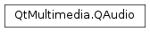

QAudio¶
Synopsis¶
Static functions¶
- def
convertVolume(volume, from, to)
Detailed Description¶
The QAudio namespace contains enums used by the audio classes.
-
PySide2.QtMultimedia.QAudio.Error¶ Constant Description QAudio.NoError No errors have occurred QAudio.OpenError An error occurred opening the audio device QAudio.IOError An error occurred during read/write of audio device QAudio.UnderrunError Audio data is not being fed to the audio device at a fast enough rate QAudio.FatalError A non-recoverable error has occurred, the audio device is not usable at this time.
-
PySide2.QtMultimedia.QAudio.State¶ Constant Description QAudio.ActiveState Audio data is being processed, this state is set after start() is called and while audio data is available to be processed. QAudio.SuspendedState The audio stream is in a suspended state. Entered after suspend() is called or when another stream takes control of the audio device. In the later case, a call to resume will return control of the audio device to this stream. This should usually only be done upon user request. QAudio.StoppedState The audio device is closed, and is not processing any audio data QAudio.IdleState The PySide2.QtCore.QIODevicepassed in has no data and audio system’s buffer is empty, this state is set after start() is called and while no audio data is available to be processed.QAudio.InterruptedState This stream is in a suspended state because another higher priority stream currently has control of the audio device. Playback cannot resume until the higher priority stream relinquishes control of the audio device.
-
PySide2.QtMultimedia.QAudio.Mode¶ Constant Description QAudio.AudioOutput audio output device QAudio.AudioInput audio input device
-
PySide2.QtMultimedia.QAudio.Role¶ This enum describes the role of an audio stream.
Constant Description QAudio.UnknownRole The role is unknown or undefined QAudio.MusicRole Music QAudio.VideoRole Soundtrack from a movie or a video QAudio.VoiceCommunicationRole Voice communications, such as telephony QAudio.AlarmRole Alarm QAudio.NotificationRole Notification, such as an incoming e-mail or a chat request QAudio.RingtoneRole Ringtone QAudio.AccessibilityRole For accessibility, such as with a screen reader QAudio.SonificationRole Sonification, such as with user interface sounds QAudio.GameRole Game audio QAudio.CustomRole The role is specified by QMediaPlayer.customAudioRole()See also
Note
This enum was introduced in Qt 5.6.
-
PySide2.QtMultimedia.QAudio.VolumeScale¶ This enum defines the different audio volume scales.
Constant Description QAudio.LinearVolumeScale Linear scale. 0.0(0%) is silence and1.0(100%) is full volume. All Qt Multimedia classes that have an audio volume use a linear scale.QAudio.CubicVolumeScale Cubic scale. 0.0(0%) is silence and1.0(100%) is full volume.QAudio.LogarithmicVolumeScale Logarithmic Scale. 0.0(0%) is silence and1.0(100%) is full volume. UI volume controls should usually use a logarithmic scale.QAudio.DecibelVolumeScale Decibel (dB, amplitude) logarithmic scale. -200is silence and0is full volume.See also
Note
This enum was introduced in Qt 5.8.
-
static
PySide2.QtMultimedia.QAudio.convertVolume(volume, from, to)¶ Parameters: - volume –
PySide2.QtCore.qreal - from –
PySide2.QtMultimedia.QAudio.VolumeScale - to –
PySide2.QtMultimedia.QAudio.VolumeScale
Return type: PySide2.QtCore.qrealConverts an audio
volumefroma volume scaletoanother, and returns the result.Depending on the context, different scales are used to represent audio volume. All Qt Multimedia classes that have an audio volume use a linear scale, the reason is that the loudness of a speaker is controlled by modulating its voltage on a linear scale. The human ear on the other hand, perceives loudness in a logarithmic way. Using a logarithmic scale for volume controls is therefore appropriate in most applications. The decibel scale is logarithmic by nature and is commonly used to define sound levels, it is usually used for UI volume controls in professional audio applications. The cubic scale is a computationally cheap approximation of a logarithmic scale, it provides more control over lower volume levels.
The following example shows how to convert the volume value from a slider control before passing it to a
PySide2.QtMultimedia.QMediaPlayer. As a result, the perceived increase in volume is the same when increasing the volume slider from 20 to 30 as it is from 50 to 60:void applyVolume(int volumeSliderValue) { // volumeSliderValue is in the range [0..100] qreal linearVolume = QAudio::convertVolume(volumeSliderValue / qreal(100.0), QAudio::LogarithmicVolumeScale, QAudio::LinearVolumeScale); player.setVolume(qRound(linearVolume * 100)); }
See also
QAudio.VolumeScaleQMediaPlayer.setVolume()QAudioOutput.setVolume()QAudioInput.setVolume()QSoundEffect.setVolume()QMediaRecorder.setVolume()- volume –
© 2018 The Qt Company Ltd. Documentation contributions included herein are the copyrights of their respective owners. The documentation provided herein is licensed under the terms of the GNU Free Documentation License version 1.3 as published by the Free Software Foundation. Qt and respective logos are trademarks of The Qt Company Ltd. in Finland and/or other countries worldwide. All other trademarks are property of their respective owners.